Home
Contacten
Shop
Games
Mijn naam is Sven Heijnemans
ik ben een software development
ik ben verantwoordeijk geweest
voor de website van onze studio
Ik ben Djairo en ik ben 16 jaar oud.
Ik hou heel veel van pokémon en strategy games.
Ik heb de muziek en merch gemaakt
van de game lightmares.
Ik ben joey.
Ik ben 17 jaar oud en speel graag pall world.
speel graag pall world.
Ik ben een van de programmers van de game
Hallo ik ben Atilla en ik ben 16 jaar oud.
Ik hou van anime, maar vooral van tekenen.
Ik ben diegene die de sprites voor de muren
en de speler heb gemaakt.
ik ben Leo
ik ben 16 jaar
Ik hou van bloons TD.
Ik heb de poster en titel/logo gemaakt van de game
Ik ben Anke van Dommelen.
Ik volg de opleiding software developer.
Ik ben vooral verantwoordelijk voor de game.
Ik heb de muren en de grond gemaakt.
Ik heb alleen wat ideeën gegeven aan de website.
Ik ben Sall en ik ben 18 jaar oud.
Ik fitness graag en speel graag hollow knight.
Ik heb ook de sprites gemaakt van de game.
Ook heb ik de mockups gemaakt voor de case.